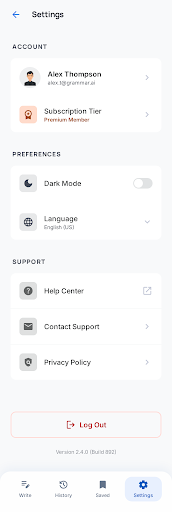

AI UI Design
Mobile App Prototypes
AI-generated mobile app interfaces designed with Google Stitch. These prototypes showcase modern app designs including login flows, dashboards, and feature-rich interfaces.

AI-generated mobile app interfaces designed with Google Stitch. These prototypes showcase modern app designs including login flows, dashboards, and feature-rich interfaces.
